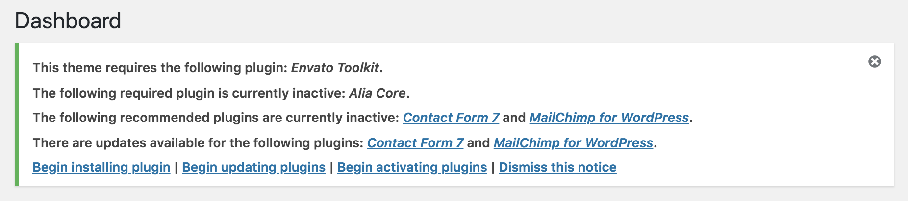

Get Started
First we want to thank you for purchasing Alia theme, we will guide you through these documentation to let you know how to get started with Alia, if you have any problem with the theme after reading read this documentation, please feel free to contact us from our Themeforest Profile, and we will answer to you in few minutes.
Installation
To install Alia Wrodpress theme, you need:
Wordperss 3.5 or higher.
Running webserver and working version of WordPress installed.
PHP and MySQL Installed on the server.
Purchasing Alia theme licence from Themeforest.
Install Alia Core plugin (Included with theme).
Now we assume that you already have WordPress installed and working on your server and you have Alia package you purchased from Themeforest, if you didn’t have WordPress Site working yet, we advice you to follow this page which has been provided by WordPress to show you installation process details. if you already have it installed, so it’s time to start installing Alia, simply choose one of the following 2 ways to install the theme.
Install Via WordPress Control Panel (Recommended)
- Download the package you purchased from Themeforest, and extract the .zip in your computer.
- Login to your WordPress control panel and click on the Appearance tab then go to Themes page.
- From the top of the page click on Add New button then click on Upload Theme.
- Choose alia.zip file from your computer and click Install Now.
- After theme installation complete click Activate The Theme and now theme should be ready to work.
Some times you are not able to install the theme by uploading alia.zip file like the previous steps, it’s due to your server limitations which limit the max size upload of the file, so if you have an access to your server configuration files we recommend that you increase max_execution_time – memory_limit – post_max_size – upload_max_filesize. if you can’t modify them then you need to go to the second method of installation.
Uploading Via FTP
- Download the package you purchased from Themeforest, and extract the .zip in your computer.
- Use FTP client to access your WordPress installation directory.
- Now you need to extract alia.zip file in your computer.
- Then upload the entire folder alia to this path inside WordPress installation ‘wp-content/themes’.
- From WordPress control panel go to Appearance then Themes and you will find Alia theme in the listed themes
- Click Activate and now theme should be ready to work.
Adding Plugins
After installing and activating the theme, you have to install some plugins to get your site working as expected, just after activating you will get a notification to begin installing plugins, some of plugins are required and others are optional, but we recommend you to install all of them if you want your site to work as our demo site. to install plugins:
Start instaling
From your WordPress site dashaboard
- Click on Begin Installing Plugins.
- Then from Bulk Actions box select Install then click Apply.
- Plugins will take a while to be installed and required plugins will get activate automatically.
- Now click on Return to Required Plugins Installer to see plugins needing activation manually.
- Check all of them then select Activate from Bulk Actions box.
- Click Apply and now Alia is ready to use.
Build Your Site
Now you have everything up and running to start building your site, and in this section we will help you to get your site looks as you expect.
If you are building a test site
If you are using Alia theme in a site which is not live for testing it's features only, you may need to install demo content to make the test site looks like Alia demo site.
- First you need to make sure that Alia Core plugin has been installed & activated from the previous step.
- Then from site dashboard go to Tools > Import.
- Scroll to the end of the page to find WordPress Importer and click Install Now if it's not installed already.
- Now click on Run Importer.
- Choose import file, you will find it iside the Folder you downloaded from Themeforest in Demo Content > alia.demo-xxxx-xx-xx.xml and click Upload file and import.
- Check Download and import file attachments then Submit.
This will take few minutes depending on your internet connection speed then you will get All Done! message to let you know that content import is complete.
If your site is live and has content already
If you are switching from another theme and you site is live and already has content then you may find some issues with image sizes showing on your pages, this is normal because all images was uploaded before was resized to match your old theme. to get all images resized again to match Alia theme you need to install a plugin called Force Regenerate Thumbnails. after installing and activation the plugin go to Tools > Force Regenerate Thumbnails then click Regenerate all Thumbnails, wait until the process is finished and you will find all images in your site are showing perfect with Alia.
If you are buidling a new site
If you are building a new live website then you need to customize it first before you start adding content, in the next section we will help you customize every part of your website.
Customizing Your Site
To start customize your site open Customizer from your top bar, or from Appearance > Customize and you will find a blue pencil icon beside every customizable part of the page. but some times you need to make customization to elements that are not currently exist in the page, here are few tips to customize your site.
Adding Pages
Adding pages in WordPress is a simple task, Just go to Pages > Add New, then write your page title and content, you can use pages to add any static content to your site like About Me or Contact Me.
Adding Menus
To create a main menu and add pages to it you need to:
- From Wordperss control panel go to Apperance then Menus.
- Click Create New Menu and type any name then click Create Menu button.
- From the left side you can drag any category, pages or add new links to the menu.
- Drag and sort them in the right area and you can add some menus under other menu to create dropdown.
- Click Save Menu to save the items you sorted.
- After saving the menu, new settings will appear below.
- From Display Locations select Top Menu to add it to your site header and click Save Menu again.
Adding Widgets to Sidebars
Alia theme has 3 location to add widgets:
- Intro Sidebar: This appears in you homepage before blog posts, and you can any widgets to introduce yourself or your site, you can add your image, text about yourself, social icons or stories circles.
- Sliding Sidebar: This sidebar is hidden to prevent distraction of the readers and can be opened but a menu icon on the header.
- Default Sidebar: This sidebar will Appear only if you set posts layout to Right Sidebar Layout.
You get multiple Widgets with Alia theme to use in your site, and you can get more widgets from WordPress plugins if you like, to start adding widgets to any of sidebars go to Appearance > Widgets and drag widgets to the sidebar you want. In some widgets you need to add some information and save them to appear in your page.
Adding Your Social Profiles
To add your social profiles go to Customize > Social Settings and add the URL of each social profile you use. Later you can where will this social icons appear. you can select to show or hide them in header from Header Settings.
Adding Social Profile To Authors
If you want to add Social Profile to a user, You will find inputs to add social profile links in each user settings page.
Change your blog layout
By default your blog posts will appear as wide list in Homepage and Archive pages, if you want to change this list view you can do this from General Settings > Blog Layout.
Upload your logo
To upload a logo you need to open Customizer from your top bar, or from Appearance > Customize then go to Header Settings and upload 2 vesions of your logo, Default and Retina. the default one is the logo image with original size, and the retina one is the same logo image as default but with double size to appear in devices with Retina screen, so if you default logo is 120X40 the retina logo should be 240X80. Then from the same menu you need to set Logo Width and Logo Height to the dimensions of the default logo not the retina one, so you the last example you need to set width to 120 and height 40.
Adding Posts
Adding posts in WordPress site is a simple, all you need to do is to go Posts > Add New and start writing your content. with WordPress you can add tags to the post, add posts to category, or set a format to the post from the right side of the page, each post format is set to look in unique design on your blog list, and here are all formats we support:
- Standard: This is the default post, with text only content, if you set a featured image, the image will appear in your blog list, but it will not appear inside the post, and you can set an option from customizer > post settings to show fearured image inside the post too in case you already have many standard posts with featured image already, so you don't need to change the format each one, or you want to add all posts as Standard without bothering yourself with changing post format each time you add a post.
- Image: This is a post with Image banner, the featured image will appear in blog list and insdie post.
- Video: This will show a video banner, video can be uploaded to your site or shown from a video provider like Youtube or Vimoe, all you need to do is to paste the video URL to the beginning of your post content and it will change automatically to a Video Player
- Gallery: This will show multiple images a banner for your post, to add the gallery you need to click Add Media > Create Gallery, upload or add images to the gallery you created and insert it in the post.
- Audio: This will use audio player as a banner for your post in blog list, audio can be hosted on your site or shown from audio provider like soundcloud. All you need to do is to paste audio URL to the beginning of your post content and it will change automatically to audio player.
- Status: This post will embed a social network status as a post banner, you use this post format to promote a Facebook or Twitter post in your post banner. All you need to do is to paste post URL to the beginning of your post content and it will change automatically to embeded format.
- Aside: This post format is useful if you want to write short content with no title, something like posts in social media, but added to your blog.
Adding Stories
Alia introduces new feature to the market. You can add stories, stories can be used to add quick images without writing content to improve relation with your readers. Stories can be added for the all site, and per author. but first you need to make sure that Alia-Core plugin is installed and activated.
You can add Stories circles to any sidebar from Widgets page, or just go to footer settings from customizer and select stories to appear in Static Footer
To start adding stories just go to